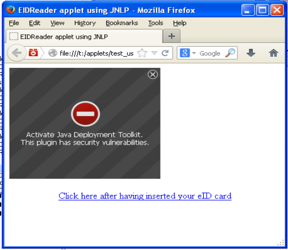
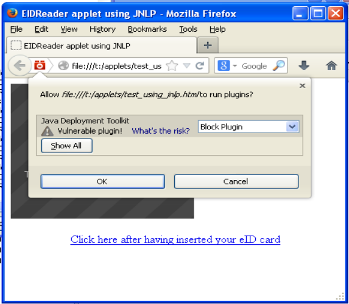
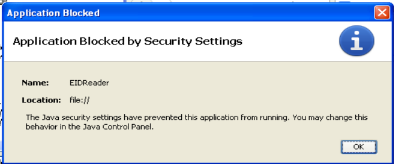
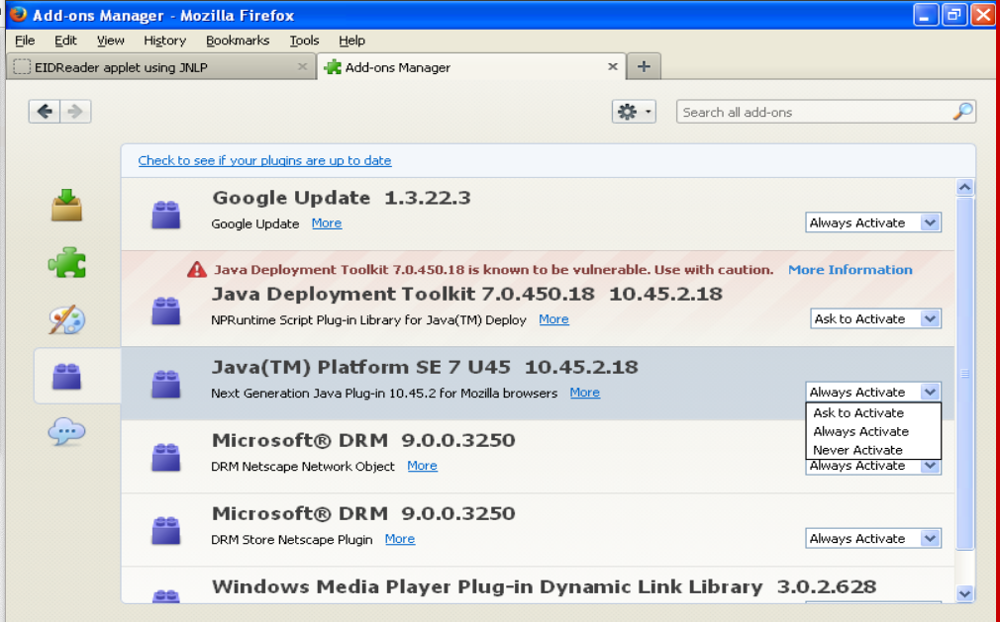

20131220 (Friday, 20 December 2013)¶
Today I continued to try to get The EIDReader applet to run on a virtual machine using Windows XP, Oracle Java 1.7. Update 45 and Mozilla Firefox. Re-installing Java did not solve the issue. Nor did Signing third-party archives. I surfed More about JNLP without really finding new possible explanations. Started to set up a public test page.
Fun with Java¶
Here are some pictures taken yesterday during my trips to Java with Manuel and Dirk...
   {kind=link}
{kind=link}
{kind=link}
{kind=link}
Re-installing Java¶
I noted once more that the installer for Oracle Java 1.7 Update 45 doesn’t work, I have the same problem as described here, and the solution being to not use the default .msi file but the “offline installer” (an .exe file of 29MB) which can be downloaded from http://www.java.com/en/download/windows_offline.jsp
Signing third-party archives¶
One person on SO reported that he solved it by “recompiling all the Apache library putted together with my classes so I generate an unique jar file and then I signed it”.
Yes, also user107312 writes that “The problem was that my jar files weren’t being compiled in the same way that I was referencing the class files.” (in How do I sign a Java applet for use in a browser?.)
And indeed I am working with unsigned versions of eid-applet.jar, commons-logging.jar and commons-codec.jar. This might be the problem. How to sign other people’s code? Simply by using jarsigner as you do with your own .jar files. Now I sign them as well. But nope, this still didn’t solve it!
More about JNLP¶
- Java 7 u45 Web Start application won’t launch seems to match my problem, and one poster there writes that he had to sign the JNLP file. (I guess he means as explained here). But I don’t (yet) believe it...
- The official release note for JNLP support (introduced by Oracle in 1.6) explains interesting things. But I don’t believe that the solution for our problem lies there.
- Fernando Cassia nicely explains in a blog post certain things I didn’t yet know.
public test page¶
A public test page where I can invite other people to test my applet is online but doesn’t yet work:
http://test-eidreader.lino-framework.org/
TODO: sign the third party jars on the server!? I’d rather include the signed jars with eidreader repository... but am I allowed to do that?
Distributing third-party .jar files¶
Is it allowed to sign a third-party .jar file and to distribute it together with my .jar file? Concretely I speak about the following libraries:
- eid-applet-services.jar from the eid-applet project (LGPL)
- commons-logging.jar from the commons-logging project.
- commons-codec.jar from the commons-codec project.
I discovered that Thunderbird is a nice IRC client and had my first chat on #apache-commons with Stefan Bodewig who did not see any problem.
I updated the docs and added a dedicated page about /eidreader/applets.
Before actually publishing the signed third-party jars, I can now ask from other people whether this is legally correct.
Are applets the right technology for eidreader?¶
Many people are telling me that Java applets are an obsolete technique. Here again a blog entry Creating a Java Applet in 2013 where Sti writes “consider using a different technology (these days, flash doesn’t have much lure either). Oracle doesn’t seem keen to make your life with applets easier, and applets don’t run on mobile clients … so welcome to Canvas, jQuery and tons of interesting Javascript frameworks (most applets do some drawing, so why not use processing.js?).”
Sorry, but I didn’t yet find an alternative to Java when I want to read a PC/SC card from a browser. Except of course for writing my own set of browser extensions.
Ist Tschetschenien ein Land?¶
Tschetschenien is eine der russischen Republiken. Eigentlich sagt man in Lino also als Land “Russland”. Genauso wie es auch kein “Land” namens Kalifornien gibt, weil Kalifornien zu den Vereingten Staaten von Amerika (USA) gehört.
“Land” ist hier im Sinne von ISO 3166-1 gemeint. Es gibt aber einen anderen Standard, ISO 3166-2, der die Unterteilungen der Länder regelt.
Nicht nur für Russland, sondern auch für die USA oder... Belgien.
ISO 3166-1 wird in Lino
in der Fixture all_countries definiert, welche
ihrerseits auf Arbeit von bosteels basiert (was ich
aber irgendwann ändern möchte, denn inzwischen habe ich ja
python-babel entdeckt).
Randnotiz: Jonathan Callahan beschreibt in einem Blog-Eintrag sehr
anschaulich den Nutzen von python-babel:
http://mazamascience.com/WorkingWithData/?p=129
Angesichts der vielen russischen Einwanderer in Eupen scheint es Bedarf zu geben, die Teilstaaten großer Nationen in Linos Länderliste aufzunehmen. Das Geburtsland einer Person ist nicht unbedingt das Gleiche wie das Land, dem ihr Geburtsort jetzt angehört.
Aber es wäre falsch, diese “Regionen” jetzt in die Liste der Länder aufzunehmen. Die gehören in die Liste der Orte (die wir in erster Linie für Städte benutzen).
Checked in¶
- Fixed a bug in lino/apps/extensible/config/snippets/extensible.js: the ls_url was still using “cal” instead of “extensible” as app label.
- Finished the last changes to convert the use_bootstrap and plain_prefix settings into a plugin.
- Repaired the test suite: prefix for “plain” is now “b”
- Checked in.
- One more change: renamed lino.extjs to
lino.apps.extjssince it is now an app. (erm... didn’t I want differentiate “system apps” from “ERP apps”?) - Tried to write a comprehensible overview of these changes in Changes in Lino.